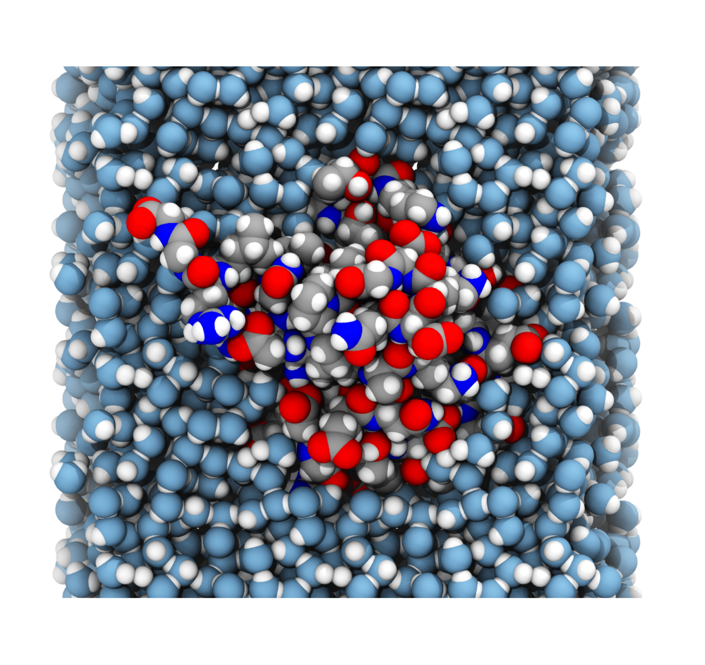
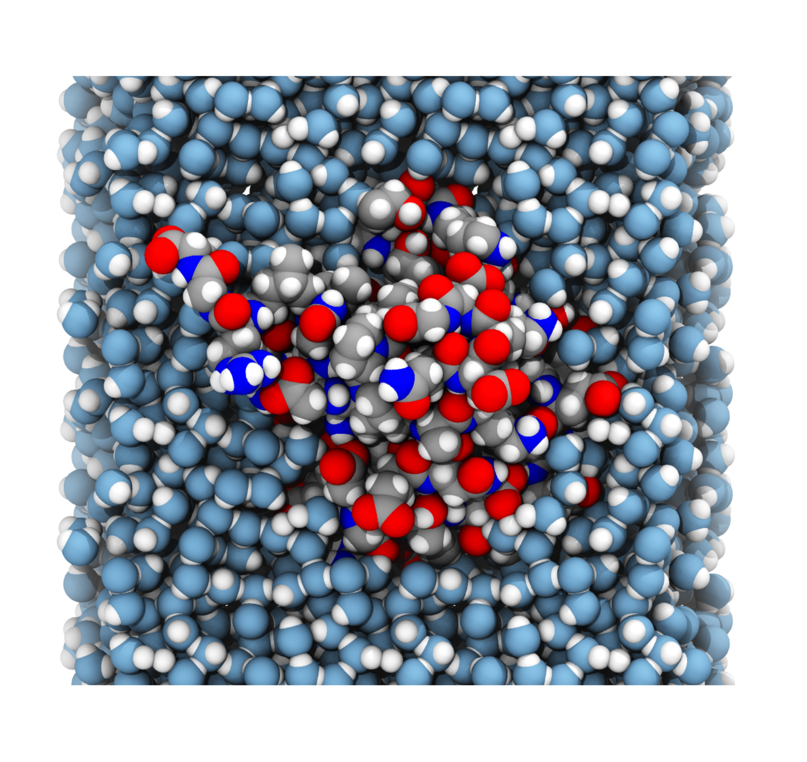

Počítačové simulace velkých biomolekulových komplexů
Michal H. Kolář
http://mhko.science/habilitace
Počítačové simulace velkých biomolekulových komplexů
- životopis + pedagogika
- teorie simulací
- simulační studie
Pedagogická činnost
1. ročníky
Seminář programu chemie (50 studentek a studentů)
2. ročníky
Fyzikální chemie A/B (50 studentek a studentů)
laboratoře Fyzikální chemie (30 studentek a studentů)
3. ročníky
Spektroskopické metody (5 studentek a studentů)
Humboldt alumni award
„Towards better academic culture through sharing czexpats' experience“
2019/10 – VŠCHT Praha
2020/02 – MUNI Brno
2020/11 – online
2021/12 – online
2022/03 – MUNI Brno
2022/06 – VŠCHT Praha
2022/06 – Štramberk
2022/10 – Olomouc
2023/01 – Vestec
2023/04 – MUNI Brno

Alumni: Ondřej Strnad, Iva Švecová, Tereza Svatoňová
SOČ: Jiří Kubíček, Lucie Havránková, Arian A. Ott.
Počítačové simulace pro studium biomolekul
Výpočty iterativní povahy, které poskytují statistický soubor biomolekulárních konformací.
Klasické simulace molekulové dynamiky
 



Interakční potenciál / force field
V(x) = vazebné + nevazebné
Vazebné
harmonické funkce pro vazby a úhly + kosinus torzí
Nevazebné
Lennard-Jones + Coulomb
různá vylepšení: NN, cut-off, posun, Ewald/PME, atp.
Specifika velkých biomolekulových komplexů

https://pdb101.rcsb.org/motm č. 181, 246, 166
Příklady simulačních studií

Kotranlační balení rodícího se peptidu
H. Grubmüller (MPI-NAT Göttingen)
S. M. Vaiana (Arizona State Uni)
Kolář et al.: Folding of VemP into translation-arresting secondary structure is driven by the ribosome exit tunnel PMID: 35150281.
bakalářská práce I. Švecové
diplomová práce J. Cikharta
dizertační práce M. Černekové
Interakce peptidové deformylázy s ribozomem
McGrath et al.: Binding of the peptide deformylase on the ribosome surface modulates the exit tunnel interior PMID: 36335428.
SOČ J. Kubíčka
bakalářská práce H. McGratha
diplomová práce H. McGratha
dizertační práce M. Černekové
Přenost signálu mezi povrchem ribozomu a vnitřní částí tunelu.
Zúžení ribozomálního tunelu
Zúžení ribozomálního tunelu
diplomová práce T. Svatoňové
dizertační práce M. Černekové
Počítačové simulace velkých biomolekulových komplexů
- životopis + pedagogika
- teorie simulací
- simulační studie
K dalšímu čtení
Bock, Gabrielli, Kolář, Grubmüller (2023): Simulation of Complex Biomolecular Systems: The Ribosome Challenge, PMID: 36719969
Bock, Kolář, Grubmüller (2018): Molecular simulations of the ribosome and associated translation factors, PMID: 29202442
Kolář (2022): Kotranslační děje aneb první okamžiky života proteinu, Chemické listy
Kolář (2018): Jak se rodí proteiny, Vesmír
http://mhko.science/habilitace
Lars Bock, Agnieszka Bronowska, Paolo Carloni, Marek Eliáš, Helmut Grubmüller, Jan Heyda, Klára Hlouchová, Pavel Hobza, Jiří Kolafa, Tomáš Kubař, Petr Slavíček, Oriana Tabarrini
 19-06479Y, 23-05557S, 23-05764S
19-06479Y, 23-05557S, 23-05764S


Technické detaily
- silové pole Amber ff12, SPC/E voda
- v-sites na vodíkových atomech, časový krok 4 fs
- GROMACS, Plumed
Simulační výkon
- 5 ns/den na desktopové GPU
- 50 ns/den na superpočítači typu Karolina, Ostrava (bez GPU)
- 100000 ns/den na Anton3, Pittsburgh (512 uzlů)
Regrese hlavních komponent
Regrese hlavních komponent
VemP simulace vs. cryo-EM